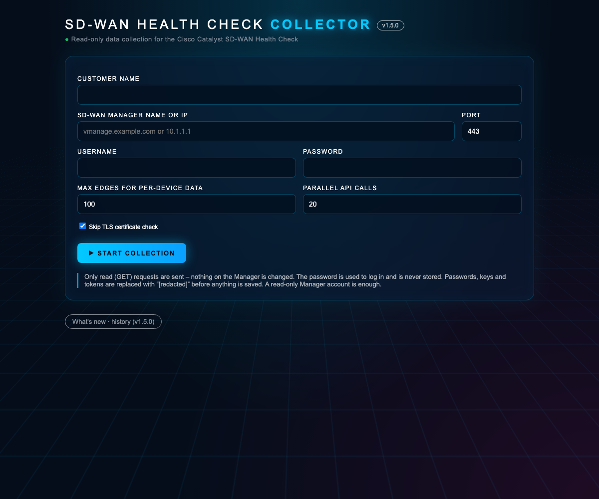
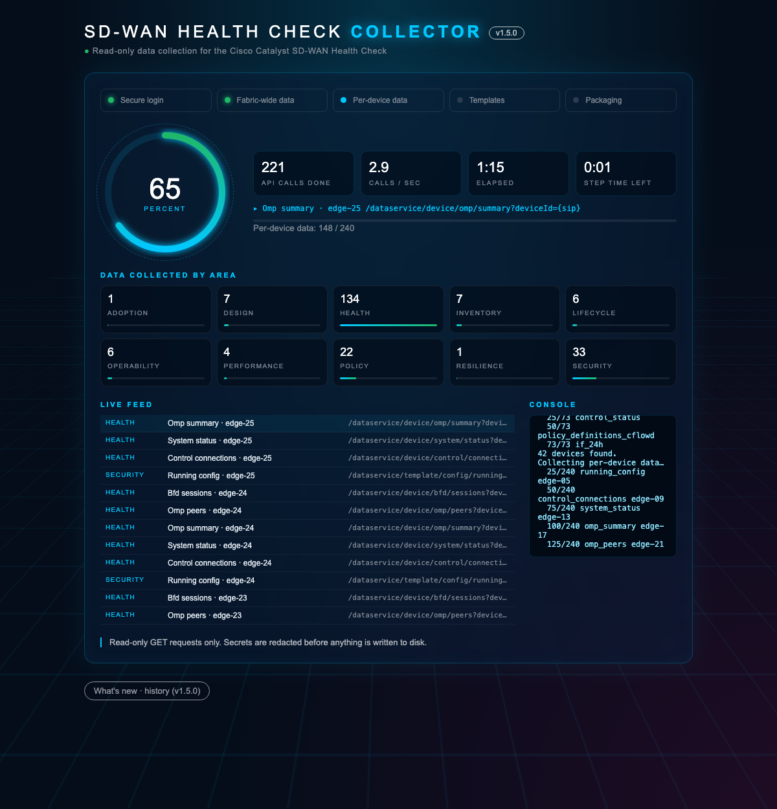
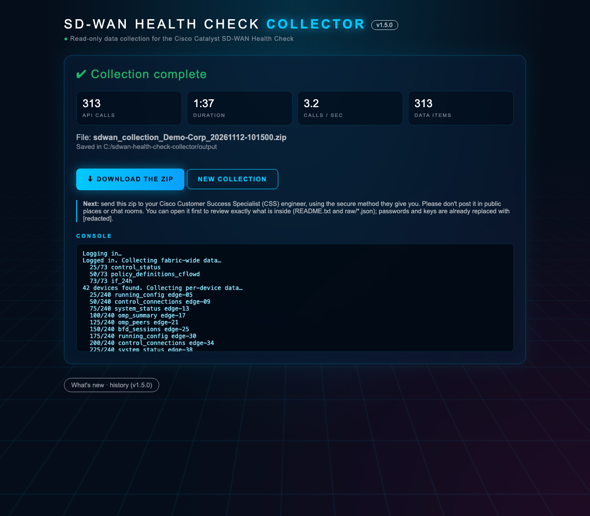

Your Cisco Customer Success Specialist (CSS) engineer asked you to run this collector. It reads data from your SD-WAN Manager, never changes anything, and saves one zip file for you to send back.
⬇ Download the collectorCheck these three things first, it takes a minute.
Three screens, from start to finished zip.
Run the collector (see Run it); a page opens in your browser. Enter your company name, the Manager’s name or IP address, the port (443 unless told otherwise) and the read-only login. Click Start collection.

The live screen shows each step, overall progress, how many read requests were made, the time left, and exactly which data is being read right now – grouped by area such as health, security and policy. A typical run takes 2–10 minutes depending on the number of routers.

When it’s done, click Download the zip. The file is also saved in the collector’s
output folder. You can open it to see exactly what was collected, then
send it to your CSS engineer.

Unzip the download, then follow the steps for your computer.
Prefer the command line? In the folder, run:
run.bat cli --url vmanage.example.com --port 443 -u readonly-user --customer "Your Company"
cd (with a space), drag the extracted folder into the window and press Enter../run.sh
Your browser opens the collector page (or go to http://127.0.0.1:5050).
unzip sdwan-health-check-collector.zip cd sdwan-health-check-collector* ./run.sh # opens the web page at http://127.0.0.1:5050 ./run.sh cli --url 10.1.1.1 --port 8443 -u readonly-user --customer "Your Company"
On a server without a browser, forward the page over SSH: ssh -L 5050:127.0.0.1:5050 user@server.
Designed to be safe to run on a production network.
[redacted] before savingYour file is named like sdwan_collection_<company>_<date>.zip.
README.txt and the raw folder. You will see that
secrets are already replaced with [redacted].output folder.Keep Skip TLS certificate check ticked (the default).
On the command line, leave out --verify-tls. To verify with your company’s certificate authority, use --ca-bundle your-ca.pem.
Enter it in the Port field (for example 8443), or add --port 8443 on the command line.
Your network probably needs a proxy. Set it first, then run again:
Windows set HTTPS_PROXY=http://proxy:8080 · macOS/Linux export HTTPS_PROXY=http://proxy:8080.
Lower Parallel API calls (for example to 5). It takes longer but puts less load on the Manager.
Max edges for per-device data (default 100) limits how many routers get detailed reads. Your CSS engineer will tell you if you should change it.
Check the username and password by logging in to the Manager in your browser with the same address and port. Accounts that require single sign-on (SSO) only may need a local read-only user.